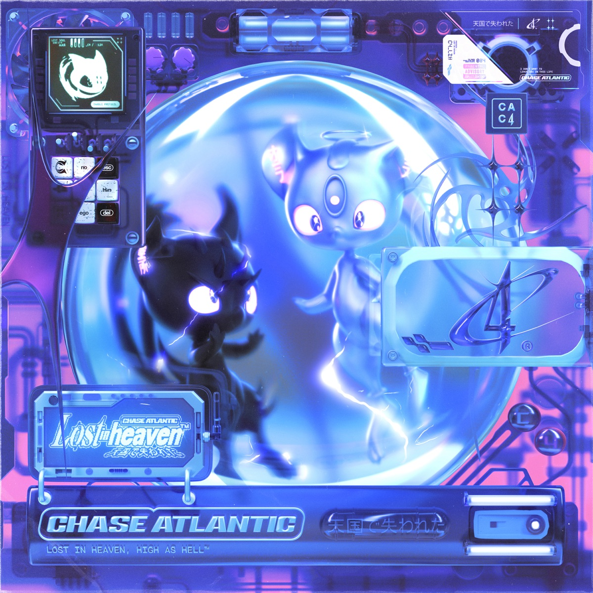

Home
Tour
VIP
Merch
Sign in

Stream: Lost in Heaven
Upcoming
November 20 2024
Los Angeles,CA
Hollywood Palladium
VIP
Tickets
December 11 2024
Melbourne, Australia
Sidney Myer Music Bowl
VIP
Tickets
Don't see a show near you?
Request a Show